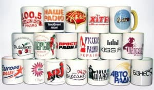

«BuStore.com.ua» - компанія з продажу електроніки та дрібної техніки для дому
Компанія «BuStore.com.ua» спеціалізується на продажу електронної техніки та дрібної техніки для дому, включаючи нові та б/у товари. Ми на ринку з 2014 року і з 2021 року займаємо важливу позицію завдяки активному інтернет-маркетингу та постійному розширенню асортименту.
Конкурентні переваги «BuStore.com.ua»:
- Широкий асортимент техніки різних категорій та рівнів стану.
- Можливість повернути товар без вказання причин протягом двох тижнів, як у випадку придбання нової техніки.
- 30-денна гарантія на придбану одиницю, із можливістю повернення товару неналежної якості або його обміну.
- Подвійний цикл перевірки техніки до її надходження у продаж.
- Робота з роздрібними та оптовими покупцями, дропшипінг.
- Можливість самовивозу товару зі складу для детального ознайомлення клієнта або доставки "Новою поштою".
- Гнучка цінова політика, включаючи знижки для оптових покупців та дропшипінг.
- Індивідуальний підхід до кожного клієнта при виборі товару.
Цикл перевірки товарів у «BuStore.com.ua»
Кожен товар, що був у використанні, проходить ретельну двофазну перевірку, яка гарантує якість продукції.
-
Фаза 1: Тестування
Перший етап циклу починається з відділу тестування, де товар проходить перевірку функціональних можливостей та якості роботи. Якщо товар виявляється належної якості та в робочому стані, він направляється у відділ продажів для подальшої реалізації.
-
Фаза 2: Ремонт та повторна перевірка
У випадку виявлення поломок чи дефектів, товар направляється у відділ ремонту, де фахівці проводять ремонт та підготовку до повернення у відділ тестування. Якщо виявлені пошкодження непоправні, фахівці рекомендують утилізувати товар.
-
Повторна перевірка
Якщо після ремонту тестувальник виявляє недоліки в роботі товару, він відправляє його на повторний ремонт. Цей цикл може повторюватись кілька разів до досягнення робочого стану товару.
Класифікація товарів «BuStore.com.ua» за станом
Техніка, що була у використанні, оцінюється за зовнішніми характеристиками та поділяється на рівні стану:
- Стан А+ - Техніка «як нова», з відмінним зовнішнім виглядом і наявністю заводських плівок передпродажу.
- Стан А - Наявні дрібні потертості, відсутні передпродажні наклейки. До цього рівня часто відносяться товари після вітрини.
-
Стан В - За зовнішнім виглядом помітно, що техніка була у використанні. Сюди відносяться масові потертості, неглибокі подряпини:
- Приклад для безпровідних навушників - сліди користування на зарядному роз'ємі.
- Для відеореєстраторів - недостача комплектуючих (наприклад, тримача для автомобіля).
- Для акустичної техніки - пил під обідком, який неможливо вичистити під час знаходження товару в майстерні.
- Для мильних диспенсерів - застигле мило, для вичищення якого необхідне відкриття корпусу, що може залишити помітні подряпини та сліди.
- Для електричних зубних щіток - батарея, що сіла, і сліди відкриття корпусу.
- Стан С - Товари зі сколами, глибокими подряпинами, тріщинами на корпусі, які не впливають на роботу вмісту техніки. Наприклад, для телевізорів можуть бути тріщини на корпусі та точки (пікселі) на екрані.
- Стан D - Товари із недоліками візуалізації на екрані, які не впливають на функціональні характеристики. Наприклад, для телевізорів і смартфонів це можуть бути пікселі або помітна смуга на екрані.
Методи просування інтернет-магазину «BuStore.com.ua»
Просування інтернет-магазину в основному здійснюється за допомогою різних засобів інтернет-маркетингу:
- Через прайс на основі гугл-таблиці;
- Через сайт компанії - із оплатою за клік і за продаж одиниці товару (залежно від категорії);
- На майданчику оголошень OLX - із рекламними формами просування;
- У телеграм-каналі;
- Дропшипінг.
Друк на чашках
Друк на чашках - чудовий подарунок для близької людини. Скільки б не було варіантів сувенірів - друк на чашці залишається найпривабливішим та недорогим.
Технологія друку
Нанесення зображення на чашку проводиться за сучасною технологією сублімаційного друку Grawerton (Гравертон), в основі якої – перенесення фарби з паперу на чашку покриту спеціальним шаром сублімації лаку. Процес перенесення малюнку відбувається під великим тиском за високої температури. Дана технологія активно використовується в рекламному бізнесі і дозволяє досягти фотографічної якості під час друку на кераміці. Сублімаційний друк дозволяє нанести будь-яке зображення на чашку за 5-10 хвилин. Саме тому у нас доступний терміновий друк на чашках. Нанесення можливе при від 1 штуки.
"Нюанси"
Через те, що ми маємо мало досвіду - механізм оплати наступний: якщо результат сподобався - Ви здійснюєте оплату за замовлення, а якщо присутні суттєві недоліки - чашка залишається в подарунок.